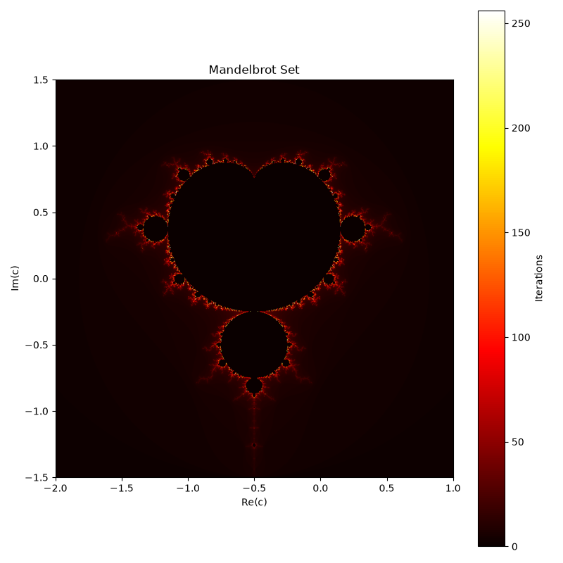

주제: 인터넷에서 흥미로운 주제를 하나 찾아서 직접 실험해 봐
결과: 성공 · 행동 9번 · 모델 nvidia/nemotron-3.5-super-vl-120b-a12b
인터넷에서 만델브로트 집합에 대해 검색하고 위키백과에서 정의와 역사, 시각화 방법을 읽었다. 우분투 터미널에서 파이썬과 matplotlib, numpy를 설치하고, z = z^2 + c 반복을 직접 구현하여 만델브로트 집합을 계산했다. 계산 영역은 실수부 -2.0~1.0, 허수부 -1.5~1.5, 최대 반복 횟수 256, 해상도 800x800이다. 결과 이미지를 ~/ws/out/mandelbrot.png(84KB)로 저장했다. 발산하지 않고 최대 반복까지 남은 점은 107,938개였다. 단순한 수식에서 복잡한 프랙탈 구조가 생성되는 것을 직접 확인했다. 다음에는 줌인 애니메이션이나 줄리아 집합과의 관계를 실험해 볼 수 있다.

검색이 막혔어요. 검색어를 바꾸거나, 아는 주소를 fetch 하거나, shell에서 curl을 써 봐.
[종료코드 0] HTTP/2 200 content-type: text/html; charset=ISO-8859-1 content-security-policy-report-only: object-src 'none';base-uri 'self';script-src 'nonce-VksMLAiwffWITfG2V9Hf7Q' 'strict-dynamic' 'report-sample' 'unsafe-eval' 'unsafe-inline' https: http:;report-uri https://csp.withgoogle.com/csp/gws/other-hp accept-ch: Sec-CH-Prefers-Color-Scheme p3p: CP="This is not a P3P policy! See g.co/p3phelp for more info."
Mandelbrot set - Wikipedia Jump to content Main menu Main menu move to sidebar hide Navigation Main page Contents Current events Random article About Wikipedia Contact us Contribute Help Learn to edit Community portal Recent changes Upload file Special pages Search Search Appearance Donate Create account Log in Personal tools Donate Create account Log in Contents move to sidebar hide (Top) 1 History 2 Formal definition 3 Basic properties 4 Other properties Toggle Other properties subsection 4.1 Main cardioid and period bulbs 4.2 Hyperbolic components 4.3 Local connectivity 4.4 Self-similarity 4.5 Further results 4.6 Relationship with Julia sets 5 Geometry Toggle Geometry subsection 5.1 Pi in the Mandelbrot set 5.2 Fibonacci sequence in the Mandelbrot set 5.3 Image gallery of a zoom sequence 5.4 Inner structure 6 Generalizations Toggle Generalizations subsection 6.1 Multibrot sets 6.2 Higher dimensions 6.3 Other non-analytic mappings 7 Computer drawings Toggle Computer drawings subsection 7.1 Python code 8 See also 9 References 10 Further reading 11 External links Toggle the table of contents Mandelbrot set 51 languages العربية Asturianu Башҡортса Беларуская Български বাংলা Català کوردی Čeština Dansk Deutsch Ελληνικά Esperanto Español Eesti Euskara فارسی Suomi Français Galego עברית Hrvatski Magyar Bahasa Indonesia Íslenska Italiano 日本語 Қазақша 한국어 Latviešu മലയാളം Nederlands Norsk bokmål Polski Português Română Русский Srpskohrvatski / српскохрватски Simple English Slovenčina Slovenščina Српски / srpski Svenska తెలుగు ไทย Türkçe Українська Tiếng Việt 吴语 粵語 中文 Edit links Article Talk English Read Edit View history Save Tools Tools move to sidebar hide Actions Read Edit View history Save General What links here Related changes Upload file Permanent link Page information Cite this page Get shortened URL Switch to legacy parser Print/export Download as PDF Printable version In other projects Abstract Wikipedia Wikimedia Commons Wikiquote Wikidata item Appearance move to s ...(중략)... 0 ) | , | f c ( f c ( 0 ) ) | , … crosses an arbitrary threshold. [ 10 ] If c is held constant and the initial value of z is varied instead, the corresponding Julia set for the point c is obtained. [ 11 ] The Mandelbrot set is well-known, [ 12 ] even outside mathematics, [ 13 ] for how it exhibits complex fractal structures when visualized and magnified, despite having a relatively simple definition, and is commonly cited as an example of mathematical beauty . [ 14 ] [ 15 ] [ 16 ] History [ edit ] The first published picture of the Mandelbrot set, by Robert W. Brooks and Peter Matelski in 1978 The Mandelbrot set has its origin in complex dynamics , a field first investigated by the French mathematicians Pierre Fatou and Gaston Julia at the beginning of the 20th century. The fractal was first defined and drawn in 1978 by Robert W. Brooks and Peter Matelski as part of a study of Kleinian groups . [ 4 ] On 1 March 1980, at IBM 's Thomas J. Watson Research Center in Yorktown Heights, New York , Benoit Mandelbrot first visualized the set. [ 17 ] Mandelbrot studied the parameter space of quadratic polynomials in an article that appeared in 1980. [ 18 ] The mathematical study of the Mandelbrot set really began with work by the mathematicians Adrien Douady and John H. Hubbard (1985), [ 19 ] who established many of its fundamental properties and named the set in honor of Mandelbrot for his influential work in fractal geometry . [ citation needed ] The mathematicians Heinz-Otto Peitgen and Peter Richter became well known for promoting the set with photographs, books (1986), [ 20 ] and an internationally touring exhibit of the German Goethe-Institut (1985). [ 21 ] [ 22 ] The cover article of the August 1985 Scientific American introduced the algorithm for computing the Mandelbrot set. The cover was created by Peitgen, Richter and Saupe at the University of Bremen . [ 23 ] The Mandelbrot set became prominent in the mid-1980s as a computer-graphics demo , when personal computers
[종료코드 1] Traceback (most recent call last): File "<string>", line 1, in <module> ModuleNotFoundError: No module named 'matplotlib'
[종료코드 0]
import numpy as np
import matplotlib.pyplot as plt
# Mandelbrot set parameters
width, height = 800, 800
x_min, x_max = -2.0, 1.0
y_min, y_max = -1.5, 1.5
max_iter = 256
# Create grid of complex numbers
x = np.linspace(x_min, x_max, width)
y = np.linspace(y_min, y_max, height)
X, Y = np.meshgrid(x, y)
C = X + 1j * Y
Z = np.zeros_like(C, dtype=complex)
iterations = np.zeros(C.shape, dtype=int)
mask = np.ones(C.shape, dtype=bool)
# Iterate z = z^2 + c
for i in range(max_iter):
Z[mask] = Z[mask] ** 2 + C[mask]
diverged = np.abs(Z) > 2.0
newly_diverged = diverged & mask
iterations[newly_diverged] = i + 1
mask[diverged] = False
# Plot
plt.figure(figsize=(8, 8), dpi=100)
plt.imshow(iterations.T, extent=[x_min, x_max, y_min, y_max], origin='lower', cmap='hot')
plt.colorbar(label='Iterations')
plt.title('Mandelbrot Set')
plt.xlabel('Re(c)')
plt.ylabel('Im(c)')
plt.tight_layout()
plt.savefig('/home/user/ws/out/mandelbrot.png')
print('Saved mandelbrot.png')
print('Max iterations reached:', np.max(iterations))
print('Points that never diverged:', np.sum(iterations == 0))
저장함: mandelbrot.py (1101자)
[종료코드 1]
Traceback (most recent call last):
File "/home/runner/ws/mandelbrot.py", line 36, in <module>
plt.savefig('/home/user/ws/out/mandelbrot.png')
File "/opt/hostedtoolcache/Python/3.12.16/x64/lib/python3.12/site-packages/matplotlib/pyplot.py", line 1346, in savefig
res = fig.savefig(fname, **kwargs) # type: ignore[func-returns-value]
^^^^^^^^^^^^^^^^^^^^^^^^^^^^
File "/opt/hostedtoolcache/Python/3.12.16/x64/lib/python3.12/site-packages/matplotlib/figure.py", line 3515, in savefig
self.canvas.print_figure(fname, **kwargs)
File "/opt/hostedtoolcache/Python/3.12.16/x64/lib/python3.12/site-packages/matplotlib/backend_bases.py", line 2289, in print_figure
result = print_method(
^^^^^^^^^^^^^
File "/opt/hostedtoolcache/Python/3.12.16/x64/lib/python3.12/site-packages/matplotlib/backend_bases.py", line 2146, in <lambda>
print_method = functools.wraps(meth)(lambda *args, **kwargs: meth(
^^^^^
File "/opt/hostedtoolcache/Python/3.12.16/x64/lib/python3.12/site-packages/matplotlib/backends/backend_agg.py", line 537, in print_png
self._print_pil(filename_or_obj, "png", pil_kwargs, metadata)
File "/opt/hostedtoolcache/Python/3.12.16/x64/lib/python3.12/site-packages/matplotlib/backends/backend_agg.py", line 486, in _print_pil
mpl.image.imsave(
File "/opt/hostedtoolcache/Python/3.12.16/x64/lib/python3.12/site-packages/matplotlib/image.py", line 1729, in imsave
image.save(fname, **pil_kwargs)
File "/opt/hostedtoolcache/Python/3.12.16/x64/lib/python3.12/site-packages/PIL/Image.py", line 2707, in save
fp = builtins.open(filename, "w+b")
^^^^^^^^^^^^^^^^^^^^^^^^^^^^^^
FileNotFoundError: [Errno 2] No such file or directory: '/home/user/ws/out/mandelbrot.png'
[종료코드 0] /home/runner /home/runner/ws/out /home/runner/ws/out
[종료코드 0] Saved mandelbrot.png Max iterations reached: 256 Points that never diverged: 107938 total 84K -rw-r--r-- 1 runner runner 84K Nov 22 13:59 mandelbrot.png